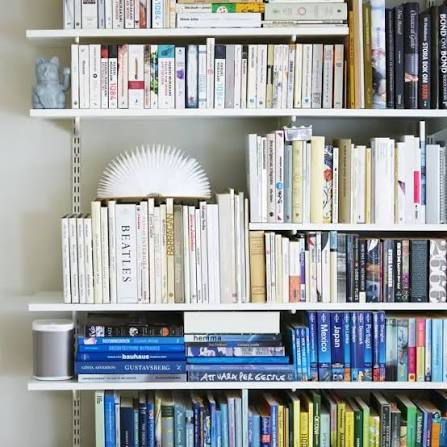
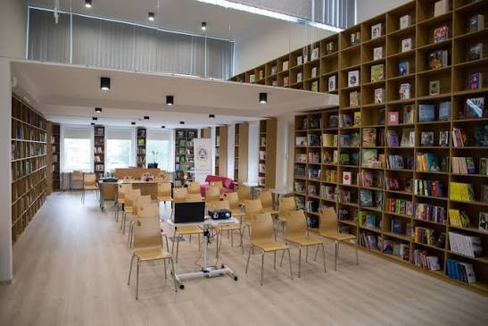
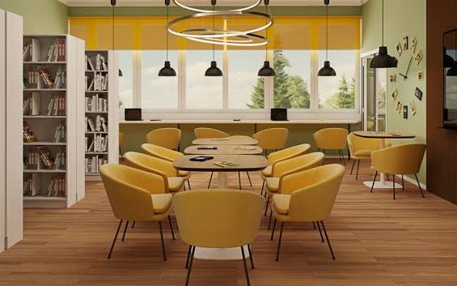

О библиотеке
Библиотека — это место, где люди могут читать книги, узнавать новое и проводить свободное время. Здесь можно найти книги для детей, учеников и взрослых.
Рекомендуемые книги
Чтение помогает развивать воображение и расширять словарный запас. Каждая книга может научить нас чему-то интересному.
- Приключенческие книги
- Романы и рассказы
- Научные книги
- Энциклопедии

Чтение для всех
Библиотека предоставляет доступ к информации и культуре. Ученики могут найти книги для учёбы, а другие люди могут читать для отдыха или получения новых знаний.

Почему полезно читать
Книги помогают лучше понимать окружающий мир, развивать память и узнавать интересные факты. Даже несколько страниц в день могут быть полезными.

Полезная информация
Читатели могут брать книги домой и заниматься в спокойной обстановке. Больше информации можно найти на сайте Национальной библиотеки Румынии.